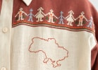

<section class="hero">
    <div class="container hero-container">
        <div class="hero-main">
            
            <div class="title">
                <h1 class="main-title">
                    Reviving the traditional <span class="ukraine">Ukrainian</span> artistry in every stitch.
                </h1>
                <button class="order-button" type="button">
                    order
                    <svg class="order-button-icon" width="26" hight="10">
                        <use href="../img/icons.svg#icon-arrow">
                        </use>
                    </svg>
                </button>
            </div>
        </div>

        <div slass="star">
            <ul class="star-list list">
                <li class="star-item">
                    <button class="star-button" type="button"><svg class="star-icon" width="52" hight="51">
                            <use href="../img/icons.svg#icon-star">
                            </use>
                        </svg>
                    </button>

                </li>
                <li class="star-item">
                    <p class="star-text">
                        all embroidery is made by hand
                    </p>
                </li>
            </ul>
        </div>
    </div>
    <div class="hero-small-image"></div>
    </div>


</section>